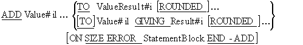
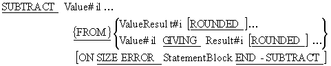
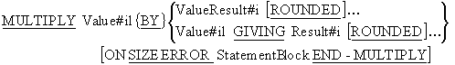
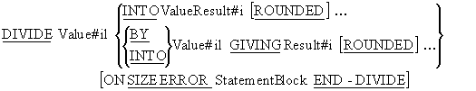
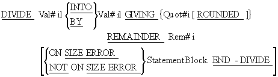
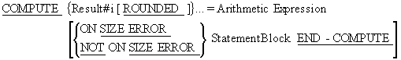

Introduction
- Most procedural programming languages perform computations by assigning the result of an arithmetic expression or a function to a variable. In COBOL the COMPUTE verb is used to evaluate arithmetic expressions, but there are also specific commands for adding, subtracting, multiplying and dividing.
Data Movement
- In a MOVE operation data is moved from a source item on the left to the destination item(s) on the right. Data movement is from left to right. The same direction of data movement can be observed in the COBOL arithmetic verbs.
- All the arithmetic verbs, except the COMPUTE, assign the result of the calculation to the rightmost data-items.
General Rules
- All the arithmetic verbs move the result of a calculation into a receiving data-item according to the rules for a numeric move; that is, with alignment along the assumed decimal point and with zero-filling or truncation as necessary.
- All arithmetic verbs must use numeric literals or numeric data-items (PIC 9) that contain numeric data. There is one exception. Identifiers that appear to the right of the word GIVING may refer to numeric data-items that contain editing symbols.
- When the GIVING phrase is used, the data-item following the word GIVING is the receiving field of the calculation but it is not one of the statement operands (does not contribute to the result). The original values of all the items before the word GIVING are left intact.
- If the GIVING phrase is not used, the data-item(s) after the word TO, FROM, BY or INTO both contribute to the result and are receiving field for it.
- The maximum size of each operand is 18 digits.
The ROUNDED option
- All the arithmetic verbs allow the ROUNDED phrase.
- The ROUNDED phrase takes effect when, after decimal point alignment, the result calculated must be truncated on the right hand side. The option adds 1 to the receiving item when the leftmost truncated digit has an absolute value of 5 or greater.
|
ROUNDED examples
|
|
Receiving Field
|
Actual Result
|
Truncated Result
|
Rounded Result
|
|
PIC 9(3)V9
|
123.25 |
123.2 |
123.3 |
| PIC 9(3)V9 |
123.247 |
123.2 |
123.2 |
| PIC 9(3) |
123.25 |
123 |
123 |
ON SIZE ERROR
- When a computation is performed it is possible for the result to be too large or too small to be contained in the receiving field. When this occurs, there will be truncation of the result. The ON SIZE ERROR phrase detects this condition.
ON SIZE ERROR notes
- All the arithmetic verbs allow the ON SIZE ERROR phrase.
- A size error condition exists when, after decimal point alignment, the result is truncated on either the left or the right hand side.
- If an arithmetic statement has a ROUNDED phrase then a size error only occurs if there is truncation on the left-hand side (most significant digits) because if we specify the ROUNDED option we indicate that we know there will be truncation on the right and are specifying rounding to deal with it.
- Division by 0 always causes a SIZE ERROR.
ON SIZE ERROR examples
|
Receiving Field
|
Actual Result
|
Truncated Result
|
Size Error?
|
| PIC 9(3)V9 |
245.96 |
245.9
|
YES
|
| PIC 9(3)V9 |
3245.9
|
245.9
|
YES
|
| PIC 9(3) |
324
|
324
|
NO
|
| PIC 9(3) |
5324
|
324
|
YES
|
| PIC 9(3)V9 not Rounded |
523.35
|
523.3
|
YES
|
| PIC 9(3)V9 Rounded |
523.35 |
523.4 |
NO
|
| PIC 9(3)V9 Rounded |
3523.35
|
523.4
|
YES
|
ADD verb

- If the GIVING phrase is used, everything before the word GIVING is added together and the combined result is moved into each of the Result#i items.
- If the GIVING phrase is not used, everything before the word TO is added together and the combined result is then added to each of the ValueResult#i items in turn
SUBTRACT verb

- If the GIVING phrase is used, everything before the word FROM is added together and the combined result is subtracted from the Value#il item after the word FROM and the result is moved into each of the Result#i items.
- f the GIVING phrase is not used everything before the word FROM is added together and the combined result is then subtracted from each of the ValueResult#i items after the word FROM in turn.
MULTIPLY

- If the GIVING phrase is used, then the item to the left of the word BY is multiplied by the Value#i item to the right of the word BY and the result is moved into each of the Result#i items.
- If the GIVING phrase is not used, then the Value#il to the left of the word BY is multiplied by each of the ValueResult#i items. The result of each calculation is placed in the ValueResult#i involved in the calculation.
DIVIDE verb
- The Divide has two main formats. One produces a remainder and the other does not.
Format 1

- In the GIVING phrase is used, the Value#il to the left of BY or INTO is divided by or into the Value#il to the right of BY or INTO and the result of the calculation in moved into each of the Result#i items in turn.
- If the GIVING phrase is not used, the item to the left of the word INTO is divided into each of the ValueResult#i items in turn. The result of each calculation is placed in the ValueResult#i involved in the calculation.
Format 2

- In this format the Val#il to the left of BY or INTO is divided by or into the Val#il to the right of BY or INTO. The quotient part of the computation is assigned to Quot#i and the remainder is assigned to Rem#i.
COMPUTE verb

- The COMPUTE assigns the result of an arithmetic expression to a data-item. The arithmetic expression is evaluated according to the normal arithmetic rules. That is, the expression is normally evaluated from left to right but bracketing and the precedence rules shown below can change the order of evaluation.
|
Precedence
|
Symbol
|
Meaning
|
|
1.
|
**
|
Power
|
|
2.
|
*
|
multiply
|
|
/
|
divide
|
|
3.
|
+
|
add
|
|
-
|
subtract
|
- Note that unlike some other programming languages COBOL provides the ** expression symbol to represent raising to a power.
Arithmetic examples
- The animation below contains examples of each of the arithmetic verbs. The arithmetic statement shows the contents of the variables before the statement executes. Initially the contents of the variables after execution are hidden; but you can display them by clicking with the mouse.
- Before you display the contents of the variables, try to figure out what they are going to be. If you get the wrong answer, make sure you understand why the statement produces the answer shown.